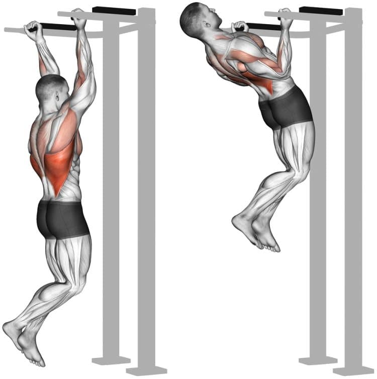
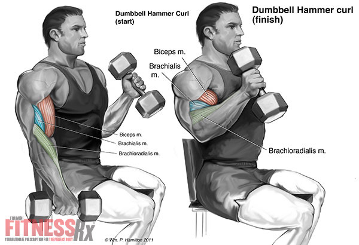

Pull Day Workout Routine: Guide For Building Muscle & Strength
1. Warm up
Kick-start your workout with about 5 to 10 minutes of light cardio. Activities such as cycling, push-ups, or jogging increase blood flow and warm up your muscle groups.
It also prepares the body for the upcoming workout. You may find it helpful to include stretches for your shoulders, chest, and triceps during warm-ups.

2.Deadlifts:
Deadlifts are a compound exercise that targets multiple muscle groups, including the hamstrings, glutes, lower back, and various muscles in the upper body. It's crucial to perform deadlifts with proper form to prevent injury and maximize their effectiveness. Here's a step-by-step guide on how to perform a conventional deadlift:
Conventional Deadlift:
1 Setup:
Stand with your feet hip-width apart. The barbell should be positioned over the middle of your feet.
The barbell should be close to your shins, with your toes pointing slightly outward.
2 Grip:
Bend at your hips and knees to lower your body.
Grip the barbell with your hands shoulder-width apart. You can choose between a double overhand grip or a mixed grip (one hand pronated, one supinated) for a stronger hold.
3 Body Position:
Keep your back straight, chest up, and shoulders pulled back.
Engage your core for stability.
4 Lift:
Initiate the lift by driving through your heels, straightening your hips and knees simultaneously.
Keep the barbell close to your body as you lift.
Maintain a neutral spine throughout the movement.
5 Lockout:
Stand up straight with your shoulders pulled back.
Squeeze your glutes at the top of the movement.
Avoid leaning back excessively.
6 Lowering the Bar:
Hinge at your hips and bend your knees to lower the bar back to the ground.
Keep the bar close to your body during the descent.
7 Tips:
Start with a light weight to practice proper form before adding more weight.
Warm up adequately before attempting heavy deadlifts.
Keep the barbell close to your body throughout the lift to minimize stress on your lower back.
Focus on a controlled descent to avoid injury.
8 Variations:
There are variations of deadlifts, such as sumo deadlifts and Romanian deadlifts, which target muscles slightly differently. Make sure to incorporate a variety of deadlift variations into your routine for a well-rounded approach.
If you're new to deadlifting or have any concerns about your form, consider seeking guidance from a fitness professional. They can provide feedback and ensure that you're performing the exercise safely and effectively.

3. Pull-Ups:
Pull-ups are an excellent upper body exercise that primarily targets the muscles in your back, particularly the latissimus dorsi, but also engage your biceps, shoulders, and core. Here's a step-by-step guide on how to perform a standard pull-up:
Pull-ups are an excellent upper body exercise that primarily targets the muscles in your back, particularly the latissimus dorsi, but also engage your biceps, shoulders, and core. Here's a step-by-step guide on how to perform a standard pull-up:

4. Barbell Bent Over Rows:
Barbell bent over rows are an effective compound exercise that primarily targets the muscles in your upper back, including the lats, rhomboids, and traps. Here's a step-by-step guide on how to perform barbell bent over rows with proper form:
Barbell Bent Over Rows:
1 Setup:
Stand with your feet hip-width apart.
Hold a barbell with an overhand grip (palms facing down).
Your grip should be slightly wider than shoulder-width.
2 Stance:
Bend at your hips and knees to lower your torso until it's nearly parallel to the ground.
Maintain a straight back and a neutral spine throughout the movement.
3 Grip and Hand Placement:
Grasp the barbell with your hands slightly wider than shoulder-width apart.
Your hands should be just outside your knees.
4 Pull:
Pull the barbell towards your lower chest by driving your elbows back.
Keep the barbell close to your body throughout the movement.
Squeeze your shoulder blades together at the top of the movement.
5 Lowering:
Lower the barbell back down in a controlled manner, fully extending your arms.
Avoid rounding your back or using momentum to lift the weight.

5.Seated Cable Rows:
Seated cable rows are an excellent exercise for targeting the muscles of the upper back, including the latissimus dorsi, rhomboids, and traps. Here's a step-by-step guide on how to perform seated cable rows with proper form:
Seated Cable Rows:
1 Setup:
Sit down on the cable row machine with your feet flat on the platform, knees slightly bent.
Adjust the chest pad to fit snugly against your chest.
Grab the handles or the bar attachment with an overhand grip (palms facing down), hands slightly wider than shoulder-width apart.
2 Posture:
Sit tall with a straight back and a natural arch in your lower back.
Keep your chest up and shoulders pulled back.
3 Pull:
Start with your arms fully extended, and pull the handles or bar towards your lower chest by retracting your shoulder blades.
Focus on driving your elbows back and keeping them close to your body.
Squeeze your shoulder blades together at the peak of the movement.
4 Full Contraction:
At the fully contracted position, your torso should be slightly leaning back, and the handles or bar should be close to your lower chest.
5 Extension:
Slowly extend your arms, returning to the starting position, while maintaining control over the resistance.

6.Dumbbell Bicep Curls:
Dumbbell bicep curls are a classic and effective exercise for targeting the muscles of the biceps. Here's a step-by-step guide on how to perform dumbbell bicep curls with proper form:
Dumbbell Bicep Curls:
1 Starting Position:
Stand with your feet shoulder-width apart.
Hold a dumbbell in each hand, with your palms facing forward (supinated grip).
Keep your back straight, chest up, and shoulders back.
2 Arm Position:
Allow your arms to fully extend, with the dumbbells hanging at arm's length by your sides.
3 Curling Movement:
Exhale and, with your elbows close to your torso, curl the weights while keeping your upper arms stationary.
Continue the curl until the dumbbells are at shoulder level. Focus on contracting your biceps throughout the movement.
4 Peak Contraction:
At the top of the movement, squeeze your biceps for a brief moment to maximize the contraction.
5 Lowering Phase:
Inhale and slowly lower the dumbbells back to the starting position in a controlled manner.
Avoid swinging or using momentum to lift the weights.

7.Hammer Curls:
Hammer curls are a variation of traditional bicep curls that target not only the biceps but also the brachialis muscle, which lies underneath the biceps. Here's a step-by-step guide on how to perform hammer curls:
Hammer Curls:
1 Starting Position:
Stand with your feet shoulder-width apart.
Hold a dumbbell in each hand, but this time, your palms should face your torso (neutral grip or "hammer" grip).
Keep your back straight, chest up, and shoulders back.
2 Arm Position:
Allow your arms to fully extend, with the dumbbells hanging at arm's length by your sides.
3 Curling Movement:
Exhale and, with your elbows close to your torso, curl the weights by flexing your forearms.
Continue the curl until the dumbbells are at shoulder level.
4 Peak Contraction:
At the top of the movement, squeeze your biceps and brachialis for a brief moment to maximize the contraction.
5 Lowering Phase:
Inhale and slowly lower the dumbbells back to the starting position in a controlled manner.
Avoid swinging or using momentum to lift the weights.
